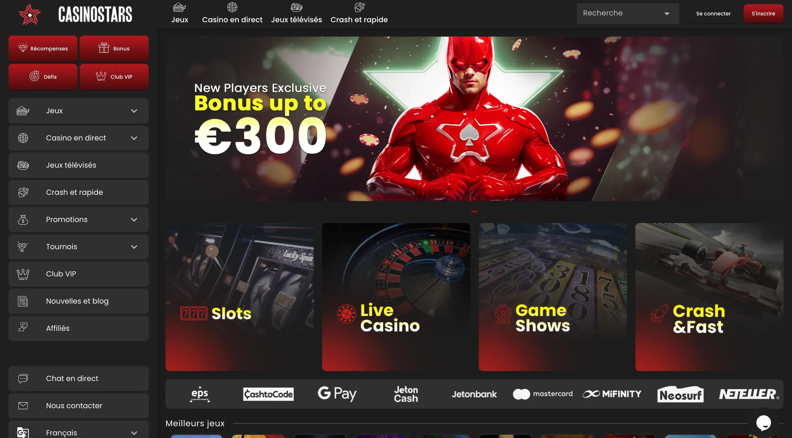

Les meilleurs casinos en ligne francophones fiables en 2026
 Rédigé par :
Dariah Belle
· Dernière mise à jour : 9 Janvier 2026
Rédigé par :
Dariah Belle
· Dernière mise à jour : 9 Janvier 2026
18+. Le jeu en ligne doit rester un divertissement. Jouez avec modération, fixez des limites et ne misez jamais plus que ce que vous pouvez vous permettre de perdre. Si vous sentez que le jeu devient un problème, demandez de l'aide dès maintenant.
Le marché des casinos en ligne francophones est en pleine expansion, avec une offre toujours plus variée et compétitive. Que vous soyez joueur occasionnel ou amateur de jeux en ligne, il est essentiel de choisir une plateforme adaptée, fiable et pensée pour les utilisateurs francophones.
Voici mon Top des meilleurs casinos en ligne destinés au public francophone, sélectionnés selon des critères rigoureux : fiabilité des opérateurs, qualité des bonus, richesse de la ludothèque, réactivité du support client et rapidité des retraits.
Top 5 Casinos en Ligne
🏅 Mon Top 10 des meilleurs casinos en ligne 2026
Je veux vous faire découvrir mon Top 10 des casinos en ligne 💖. Je vais partager avec vous ce que j’aime et ce que j’aime moins dans chacun, pour que vous puissiez faire le bon choix. Je suis confiante en ces casinos et, si besoin, je peux vous guider ou vous aider à les utiliser en toute sécurité.
C'est pourquoi je partage ici mes avis honnêtes et directs, basés sur mon expérience réelle de joueuse. Prenez une minute pour parcourir ce classement - cela peut vraiment vous éviter des erreurs et vous faire gagner du temps.
Chaque site présenté ici a ses points forts et ses limites, que je détaille sans détour. Mon objectif n'est pas de vous vendre du rêve, mais de vous donner une vision claire et transparente. Avec ces informations, vous pourrez jouer en toute sérénité et faire un choix adapté à vos attentes.
Mafia Casino - un nouveau casino en ligne à l'ambiance unique pour les joueurs francophones

Mafia Casino s'impose comme une nouvelle destination de choix pour les amateurs de jeux en ligne francophones. Avec son univers original inspiré du monde mafieux, le site mêle divertissement, simplicité d'utilisation et sécurité, tout en proposant une plateforme 100 % adaptée aux débutants comme aux joueurs plus expérimentés.
Dès l'inscription, les nouveaux joueurs sont accueillis avec un bonus de bienvenue attractif, sans conditions complexes ni pièges cachés. L'interface est claire, fluide, et disponible en français, ce qui permet une prise en main rapide.
| 📅 Année de création | 2025 |
|---|---|
| 🎮 Nombre de jeux | 9200+ |
| 🎁 Bonus de bienvenue | 100% Jusqu'à 500 € + 200 Free Spins |
| 💳 Dépôt minimum | 10 € |
| ⏳ Délai de dépôt | Instantané |
| 💶 Retrait minimum | 10 € |
| 🕛 Délai de retrait | 0 - 3 jours ouvrables |
| 📜 Licence | Anjouan Gaming License |
Bonus De Bienvenue
100% Jusqu'à 500 € + 200
Free Spins
✅ Avantages :
- Une interface en français, facile à utiliser sur mobile ou ordinateur
- Des jeux populaires (machines à sous, jeux de table, live casino) proposés par des fournisseurs fiables
- Un support client réactif 24/7, disponible par chat ou email
- Des promotions régulières et un système de bonus adapté aux nouveaux joueurs
- Une inscription rapide et des paiements sécurisés
❌ À noter :
- La licence de jeu délivrée par Anjouan, moins réputée que celles de la MGA ou de Curaçao
🔍 Mon petit mot en tant que testeuse :
J'ai testé Mafia Casino par curiosité, attirée par son univers original façon film noir. J'ai déposé 25 € et profité du bonus de bienvenue sans souci. J'ai surtout joué sur des titres comme Money Train 4 et Wanted Dead or a Wild. Le site est fluide, et le design est vraiment immersif. Côté retrait, j'ai demandé 60 € via Skrill - validé en 48 heures, sans frais ni complications. Support dispo en français, réponse rapide et polie. Une bonne surprise !
Verdict :
Mafia Casino est une excellente option pour les joueurs francophones qui souhaitent débuter dans un environnement original, simple et sécurisé. Avec ses bonus clairs, son support francophone et son ambiance immersive, c'est une plateforme idéale pour jouer sans prise de tête.
💬 Si vous cherchez un casino qui sort un peu des sentiers battus tout en restant fiable, celui-ci mérite un essai. Après tout, qui n'a jamais rêvé d'être le parrain… des jackpots ? 😉
Brutal Casino - une plateforme moderne avec des paiements rapides et une interface en français

Brutal Casino est un site de jeu en ligne qui se distingue par son ambiance audacieuse et son offre variée. Avec une licence valide délivrée par Antigua, il propose une large gamme de jeux issus de fournisseurs renommés tels que BetSoft, Microgaming et Evolution Gaming. Les joueurs peuvent profiter de bonus attractifs, notamment un bonus de bienvenue de 100% jusqu’à 1000 € .
| 📅 Année de création | 2023 |
|---|---|
| 🎮 Nombre de jeux | 3000+ |
| 🎁 Bonus de bienvenue | 100% Jusqu'à 1000 € |
| 💳 Dépôt minimum | 20 € |
| ⏳ Délai de dépôt | Instantané |
| 💶 Retrait minimum | 20 € |
| 🕛 Délai de retrait | 0 - 2 jours ouvrables |
| 📜 Licence | Anjouan Gaming License |
Bonus De Bienvenue
100% Jusqu'à 1000 €
✅ Avantages :
- Cashback: entre 10 % et 30 % selon les offres
- Plafonds de retrait: de 6 000 € à 36 000 €
- Retraits rapides: de moins de 24 heures à immédiat
❌ À noter :
- Promotions :, pas d’offres régulières disponibles
- Support : assistance téléphonique non proposée
🔍 Mon petit mot en tant que testeuse :
J’ai testé Brutal Casino par curiosité. L’inscription a été rapide, et le site est fluide.J’ai déposé 20 € et profité du bonus de bienvenue sans problème. Les jeux sont variés, et les retraits ont été traités en 4 heures via Bitcoin.
Verdict :
Brutal Casino est une option solide pour les joueurs à la recherche d’une expérience de jeu diversifiée et sécurisée. Avec ses bonus attractifs et sa plateforme fiable, il mérite d’être essayé.
💬 Si vous aimez les sensations fortes et les frissons du jeu, Brutal Casino est fait pour vous. Avec ses bonus attractifs et sa sélection de jeux variée, c’est un vrai terrain de jeu pour les amateurs de défis ! ⚡🎲
Dragonia Casino - plongez dans un royaume de dragons et de gains

Lancé en 2025, Dragonia Casino s’impose déjà comme l’un des nouveaux venus les plus ambitieux du marché francophone. Fraîchement débarqué, mais clairement pas là pour faire de la figuration, le site affiche une volonté assumée de jouer dans la cour des grands. Et il ne manque pas d’arguments.
Plus de 10 000 jeux, des bonus généreux, des promotions constantes et une plateforme accessible depuis de nombreux pays : Dragonia combine les incontournables du secteur avec une approche moderne et dynamique. Résultat : un casino en ligne qui apporte un vrai vent de fraîcheur dans l’iGaming - et qui a de quoi séduire autant les curieux que les joueurs réguliers.
| 📅 Année de création | 2025 |
|---|---|
| 🎮 Nombre de jeux | 11000+ |
| 🎁 Bonus de bienvenue | 100% Jusqu’à 500 € + 200 Free Spins + 1 Bonus Crab |
| 💳 Dépôt minimum | 10 € |
| ⏳ Délai de dépôt | Instantané |
| 💶 Retrait minimum | 10 € |
| 🕛 Délai de retrait | 0 - 3 jours ouvrables |
| 📜 Licence | Anjouan Gaming License |
Bonus De Bienvenue
100% Jusqu'à 500 € + 200 Free Spins + 1 Bonus Crab
✅ Avantages :
- Une bibliothèque massive de jeux : plus de 11 000 titres
- Jeux de table classiques (blackjack, roulette) + tables live avec croupiers + show games
- Paiements rapides et flexibles : cartes, portefeuilles électroniques, cryptomonnaies (BTC, ETH, USDT)
- Support client disponible 24/7 dans plusieurs langues, dont le français
- Programme VIP généreux + cashback et promotions régulières
❌ À noter :
- Retraits limités à 5 000 € par opération (pour un maximum de 7 000 € par mois) pour les joueurs classiques et 20 000 € pour les VIP
🔍 Mon petit mot en tant que testeuse :
J’ai déposé 20 € via Visa, le processus a été instantané et le bonus de bienvenue s’est activé sans bug. J’ai ensuite testé une vingtaine de jeux - dont quelques titres en live - et tout a parfaitement tourné, même sur mobile.
J’ai demandé un retrait de 75 € via portefeuille crypto (USDT-TRC20) : validé en moins de 24 heures, après une simple vérification d’identité.
Le support en direct a répondu en moins de 5 minutes, avec des réponses précises et un ton courtois.
Franchement, l’expérience a été fluide du début à la fin, sans mauvaise surprise.
Verdict :
Dragonia est un nouveau venu, mais déjà un casino bien construit et loin des plateformes trop basiques qu’on croise parfois. Malgré son jeune âge, l’offre est déjà très solide : retraits dès 10 €, plus de 11 000 jeux, une assistance 24/7, un univers travaillé et des promotions régulières qui mettent un peu de piment dans l’expérience.
La licence provient d’Anjouan - pas la plus prestigieuse - mais le site travaille avec de vrais fournisseurs certifiés : Play’n GO, Pragmatic, Hacksaw, NoLimit, BTG, NetEnt… donc des jeux solides, fiables et vérifiés.
Pour les gros joueurs, le programme VIP et la flexibilité des paiements seront un vrai plus. Pour les débutants, le bonus de bienvenue est généreux, mais il faut bien lire les conditions.
Si vous aimez les casinos bien fournis, rapides et faciles à prendre en main, celui-ci mérite clairement un essai.
💬 J’ai déposé, joué, gagné un peu, perdu un peu… bref, j’ai fait mon tour complet. Dragonia est stable, rapide, et plutôt agréable à utiliser. Bonus faciles à activer, support réactif, et retrait traité dans les délais annoncés. Rien à redire - ça coche les cases essentielles 😊.
MrPacho Casino - une plateforme moderne avec un univers unique et des bonus attractifs

MrPacho Casino m’a tout de suite séduite par son style joyeux et décontracté : couleurs vives, personnages amusants et une ambiance musicale qui met de bonne humeur. On sent que la plateforme mise sur l’énergie et le divertissement pour capter l’attention. Mais est-ce que le contenu est à la hauteur du décor ? J’ai fait le test complet, et voilà mon avis.
| 📅 Année de création | 2023 |
|---|---|
| 🎮 Nombre de jeux | 4000+ |
| 🎁 Bonus de bienvenue | Jusqu'à 500 € + 200 Free Spins |
| 💳 Dépôt minimum | 20 € |
| ⏳ Délai de dépôt | Instantané |
| 💶 Retrait minimum | 10 € |
| 🕛 Délai de retrait | 0 - 5 jours ouvrables |
| 📜 Licence | Anjouan Gaming License |
Bonus De Bienvenue
Jusqu'à 500 € + 200 Free Spins
✅ Avantages :
- Bonus de bienvenue généreux et promotions régulières
- Large choix de jeux, incluant machines à sous, jeux de table et casino en direct
- Plateforme 100 % adaptée aux mobiles
- Support client disponible 24/7 par chat en direct
- Paiements rapides avec options crypto et classiques
❌ À noter :
- Pas de support téléphonique (uniquement chat et e-mail)
- Certaines promotions sont limitées selon le pays
🔍 Mon petit mot en tant que testeuse :
Honnêtement, cette plateforme est top ! Il y a tellement de jeux et de fournisseurs que je ne risque pas de m’ennuyer, c’est bien plus complet que ce que j’ai vu ailleurs. Et puis, mention spéciale à mon hôte VIP, Kristop: toujours dispo, réactif et super sympa. Je passe un super moment ici !
Verdict :
Franchement, je ne peux que recommander cette plateforme. La variété des jeux est énorme, il y en a pour tous les goûts, et l’accompagnement VIP rend vraiment l’expérience unique. Grâce à Kristop et son suivi impeccable, je me sens écoutée et prise en charge à chaque étape. Si vous cherchez un casino en ligne à la fois complet et convivial, c’est clairement une valeur sûre.
💬 MrPacho est un casino sympa et fiable, je le recommande volontiers.
Casinostars - une plateforme premium pour jouer en toute simplicité

Dès l’arrivée sur Casinostars, on est accueilli par une interface élégante au design noir & blanc, avec des touches rouges bien placées. Le site est pensé pour que chaque étape soit fluide : inscription rapide, navigation claire, accès direct aux sections «Slots», «Live», «Shows». On retrouve aussi plus de 10 000 jeux issus de plus de 60 fournisseurs, ce qui donne directement le ton.
Pour les joueuses francophones, c’est un vrai atout : bonus de bienvenue 100 % jusqu’à 300 €, programme VIP motivant, méthodes de paiement variées, crypto acceptée. Oui, l’essentiel est là.
| 📅 Année de création | 2025 |
|---|---|
| 🎮 Nombre de jeux | 10000+ |
| 🎁 Bonus de bienvenue | 100% Jusqu'à 300 € |
| 💳 Dépôt minimum | 5 € |
| ⏳ Délai de dépôt | Instantané |
| 💶 Retrait minimum | 20 € |
| 🕛 Délai de retrait | 0 - 1 jour ouvrable |
| 📜 Licence | Curaçao Gaming License |
Bonus De Bienvenue
100% Jusqu'à 300 €
✅ Avantages :
- Une ludothèque massive avec un choix énorme de jeux (slots, jeux en direct, jackpots)
- Bonus de bienvenue simple à comprendre et promotions régulières sans sur-complexité
- Interface en français, mobile friendly, et multitude de méthodes de dépôt / retrait
❌ À noter :
- Il serait intéressant de voir une section de paris sportifs ajoutée à l’avenir
- L’ajout de quelques titres de vidéo poker rendrait la ludothèque encore plus complète
- L’offre de bienvenue pourrait être un peu plus généreuse, mais elle reste correcte pour débuter
🔍 Mon petit mot en tant que testeuse :
J’ai voulu pousser le test un peu plus loin : dépôts, une session live, et un retrait crypto en moins d’une heure. Tout fonctionne bien, les délais annoncés sont respectés et le site reste agréable même après plusieurs sessions.
Verdict :
Je recommande Casinostars à toutes les joueuses, quel que soit leur niveau d’expérience ou leur budget. Pour les débutantes, les bonus sans exigence de mise sont un vrai atout ; pour les plus expérimentées, le programme VIP et les limites de dépôt élevées offrent une belle flexibilité.
La ludothèque riche, la navigation fluide et les transactions rapides rendent l’expérience agréable et sans stress.
Seul petit bémol : la limite de retrait mensuelle pourrait freiner les plus gros volumes de jeu.
Mais dans l’ensemble, Casinostars reste une plateforme fiable, complète et parfaitement adaptée à la majorité des profils de joueuses.
💬 Franchement, j’ai été séduite par Casinostars. C’est simple, propre, sans fioritures, et ça fait du bien dans un univers casino parfois surchargé. Pour celles et ceux qui veulent découvrir plusieurs jeux, profiter de bonus clairs et naviguer en français - c’est un excellent choix. Si vous êtes très expérimentée ou recherchez la licence la plus robuste, gardez tout de même un œil ouvert : mais pour l’immense majorité, ça fonctionne très bien.
CasinoPeaches - un site de jeu en ligne rafraîchissant et prometteur

CasinoPeaches est un nouveau site de jeu en ligne qui se distingue par son interface colorée et son approche conviviale. Bien qu’il soit encore jeune, il propose une sélection de jeux de qualité et un bonus de bienvenue de 250% jusqu’à 1000 €.
CasinoPeaches propose des jeux de fournisseurs réputés comme Play’n GO, Pragmatic Play ou BGaming, tous équipés de RNG. Les logiciels sont certifiés par eCOGRA et iTechLabs pour assurer des résultats aléatoires et équitables.
| 📅 Année de création | 2025 |
|---|---|
| 🎮 Nombre de jeux | 3891+ |
| 🎁 Bonus de bienvenue | 250% Jusqu'à 1000 € |
| 💳 Dépôt minimum | 20 € |
| ⏳ Délai de dépôt | Instantané |
| 💶 Retrait minimum | 20 € |
| 🕛 Délai de retrait | 0 - 2 jours ouvrables |
| 📜 Licence | Anjouan Gaming License |
Bonus De Bienvenue
250% Jusqu'à 1000 €
✅ Avantages :
- Limites de retrait mensuelles élevées, jusqu’à 30 000 €
- Plus de 560 jeux en direct proposés par 5 fournisseurs renommés
- Programme VIP 5 niveaux, avec limites de retrait élargies et récompenses personnalisées
- Cashback disponible sans exigence de mise
❌ À noter :
- Navigation un peu compliquée sans filtres de jeux
- Impossible d’essayer les jeux gratuitement en mode démo
🔍 Mon petit mot en tant que testeuse :
J’ai exploré CasinoPeaches pour découvrir son univers fruité et coloré. L’inscription a été rapide et la navigation très intuitive. J’ai déposé 25 € et j’ai testé le Texas Hold’em Poker en direct - une expérience vraiment sympa qui m’a permis de me plonger dans l’ambiance du casino. Les retraits sont encore en cours de traitement, mais tout semble clair et sécurisé. 👀
Verdict :
CasinoPeaches, c’est un univers pétillant ✨ où l’on peut s’amuser sur des jeux comme Sweet Bonanza ou Fruit Party, parfaits pour découvrir le casino sans se prendre la tête. Les bonus sont créatifs et généreux : cashback sans condition de mise et bonus de bienvenue boosté pour démarrer en douceur.
💬 Vous aimez les jeux sucrés et les expériences fruitées ? 🍑 CasinoPeaches est un vrai bonbon ! Même si le site est jeune, il offre des parties fun et colorées qui donnent envie de cliquer partout. Parfait pour les curieux et les joueurs débutants qui veulent explorer sans stress. 😄
Winzter Casino - une plateforme moderne aux promesses ambitieuses

Dès l’arrivée sur Winzter Casino, on est accueilli par une interface soignée, une navigation fluide et une ambiance conçue pour les amateurs de jeux en ligne. Le site propose une inscription rapide, l’accès à des jeux de grands fournisseurs, ainsi que des options de paiement incluant les cryptomonnaies et des retraits annoncés sous 2 jours.
Tout n’est pas parfait, bien sûr : la plateforme opère sous licence d’Anjouan, les bonus demandent un peu d’attention, et les retraits peuvent parfois prendre un peu plus de temps que prévu.
| 📅 Année de création | 2024 |
|---|---|
| 🎮 Nombre de jeux | 700+ |
| 🎁 Bonus de bienvenue | Jusqu'à 3000 € + 20% Cashback |
| 💳 Dépôt minimum | 25 € |
| ⏳ Délai de dépôt | Instantané |
| 💶 Retrait minimum | 50 € |
| 🕛 Délai de retrait | 0 - 2 jours ouvrables |
| 📜 Licence | Anjouan Gaming License |
Bonus De Bienvenue
Jusqu'à 3000 € + 20% Cashback
✅ Avantages :
- Accès aux jeux les plus en vogue
- Bonus de bienvenue jusqu’à 3 000 € pour les nouveaux inscrits
- Offres promotionnelles fréquentes pour les jeux de casino et les paris sportifs
- Large éventail de paris sportifs disponibles
- Possibilité de paiements en crypto-monnaies
- Support client disponible 24h/24 et 7j/7
❌ À noter :
- Sélection de jeux de casino limitée
🔍 Mon petit mot en tant que testeuse :
J’ai trouvé Winzter Casino agréable à explorer - son design clair et sa navigation intuitive rendent l’expérience fluide, surtout pour celles et ceux qui découvrent les casinos en ligne. Pour les débutants, c’est une belle porte d’entrée avec une sélection variée de jeux signés par des fournisseurs renommés.
En revanche, les joueuses plus expérimentées pourraient rapidement faire le tour. Dans ce cas, je conseille de découvrir Binobet Casino, où l’on retrouve plus de 6 700 jeux et une ludothèque en constante expansion.
Verdict :
Winzter Casino, c’est un peu le nouveau visage cool du jeu en ligne : des bonus sympas, une interface claire et une ambiance légère qui donne envie d’y revenir.
Pas besoin d’être une pro pour s’y retrouver - c’est un casino parfait pour jouer détendue et découvrir les grands classiques.
Je garde un œil dessus, parce qu’il a clairement le potentiel pour devenir une très belle surprise.
💬 Franchement, Winzter m’a laissé une bonne impression. Le site est fluide, moderne et facile à prendre en main. On sent que tout est pensé pour que l’expérience reste simple et fun - sans chichis 🤭.
Binobet Casino - un univers audacieux pour les joueurs à la recherche de variété

Dès l’entrée chez Binobet Casino, on tombe sur un décor original - teintes gris-violet, un petit dinosaure facétieux en mascotte 🦖- et une ludothèque qui donne envie d’explorer. Le site regroupe des milliers de jeux, y compris machines à sous, live casino, paris sportifs et e-sports, et accepte notamment les cryptomonnaies.
Pour les joueuses qui aiment se plonger dans l’offre, Binobet propose un bonus de bienvenue généreux, des missions à accomplir et une boutique de récompenses intégrée. On sent que Binobet évolue encore - quelques petits détails techniques à peaufiner, mais le potentiel est clairement là.
| 📅 Année de création | 2025 |
|---|---|
| 🎮 Nombre de jeux | 6700+ |
| 🎁 Bonus de bienvenue | Jusqu'à 1500 € + 150 Free Spins |
| 💳 Dépôt minimum | 20 € |
| ⏳ Délai de dépôt | Instantané |
| 💶 Retrait minimum | 40 € |
| 🕛 Délai de retrait | 0 - 2 jours ouvrables |
| 📜 Licence | Costa Rica |
Bonus De Bienvenue
Jusqu'à 1500 € + 150 Free Spins
✅ Avantages :
- Très large sélection de jeux + section paris & e-sports - idéal pour varier les plaisirs
- Bonus de bienvenue conséquent + système VIP / boutique de récompenses motivant
- Interface mobile bien pensée, dépôt via crypto possible, ambiance fun et moderne
❌ À noter :
- Quelques parties des conditions d’utilisation ne sont pas encore dispo en français
- En dehors des cryptos, les moyens de paiement sont encore un peu restreints.
🔍 Mon petit mot en tant que testeuse :
Binobet, c’est clairement le repaire des fans de crypto. Le site met en avant une grande variété de monnaies numériques - pratiques, rapides et surtout ultra-sécurisées.
J’aime son univers original, ses bonus bien pensés et sa ludothèque XXL qui donne envie de tout tester.
Petit bémol : pas encore de retrait par virement bancaire, dommage pour celles et ceux qui préfèrent les méthodes plus classiques.
Mais globalement, Binobet coche presque toutes les cases pour celles et ceux qui aiment jouer moderne et en toute liberté.
Verdict :
Après y avoir passé plusieurs heures, je peux dire que Binobet m’a vraiment convaincue.
J’ai adoré son univers fun et coloré, avec ces petits dinosaures qui apportent une touche d’originalité.
L’expérience est fluide, le site inspire confiance, et le programme VIP ainsi que la boutique de récompenses ajoutent une vraie dimension motivante au jeu.
Bref, un casino crypto qui a du caractère et qu’on prend plaisir à explorer.
💬 J’aime quand un casino a de la personnalité - et Binobet en a à revendre. C’est coloré, bien pensé et franchement agréable à explorer. Un bon équilibre entre fun et fiabilité.
Spininio Casino – jouer au casino et aux paris sportifs au même endroit

Spininio Casino est un casino en ligne moderne qui s’adresse aux joueurs francophones, avec des bonus attractifs en euros, une sélection variée de jeux et une interface simple à prendre en main. Voici mon avis après test.
Spininio Casino est une plateforme de jeu en ligne relativement récente qui combine casino en ligne et paris sportifs au sein d’un même compte. Le site mise sur une navigation fluide, des paiements sécurisés en euros et une offre de jeux suffisamment large pour convenir aussi bien aux nouveaux joueurs qu’aux profils plus expérimentés.
Dès les premières minutes, l’interface se montre claire, moderne et parfaitement adaptée au jeu sur ordinateur comme sur mobile.
Spininio Casino propose un bonus de bienvenue pouvant atteindre 1 000 €, un large choix de machines à sous, des jeux de table populaires et un casino en direct immersif. Ce casino en ligne s’adresse aux joueurs francophones et permet de jouer en euros (€) en toute simplicité grâce à de nombreuses méthodes de paiement sécurisées, incluant Visa, Mastercard, Skrill, Apple Pay, Google Pay, cartes prépayées, portefeuilles électroniques et cryptomonnaies, avec des dépôts rapides et des retraits fiables.
| 📅 Année de création | 2026 |
|---|---|
| 🎮 Nombre de jeux | 10000+ |
| 🎁 Bonus de bienvenue | Jusqu'à 1000 € |
| 💳 Dépôt minimum | 10 € |
| ⏳ Délai de dépôt | Instantané |
| 💶 Retrait minimum | 5 € |
| 🕛 Délai de retrait | 0 à 72 heures |
| 📜 Licence | Anjouan Gaming License |
Bonus De Bienvenue
Jusqu'à 1000 €
✅ Avantages :
- Casino & sportsbook réunis sur une seule plateforme
- Bonus attractifs en euros, incluant casino et paris sportifs
- Catalogue de jeux étendu: machines à sous, jeux de table, live casino
- Large choix de paris sportifs, y compris live betting et e-sports
- Paiements en EUR , dépôts rapides et retraits sans frais cachés
- Excellente expérience mobile, sans application obligatoire
- Sécurité SSL et outils de jeu responsable intégrés
❌ À noter :
- Licence offshore (Anjouan) , avec un niveau de régulation plus souple
- Certaines options peuventvarier selon la localisation du joueur
🔍 Mon petit mot en tant que testeuse :
Après test, Spininio laisse une impression plutôt positive, surtout grâce à sa simplicité d’utilisation et à son concept tout-en-un casino + paris sportifs. La navigation est intuitive, les jeux se chargent rapidement et l’ensemble fonctionne très bien sur mobile.
Comme souvent avec les plateformes sous licence offshore, je recommande cependant de prendre le temps de lire les conditions de bonus et de gérer son budget intelligemment. Spininio est intéressant pour jouer régulièrement, mais sans précipitation sur les retraits tant que les exigences ne sont pas remplies.
Verdict :
Spininio Casino s’adresse aux joueurs francophones qui recherchent une plateforme moderne, polyvalente et simple à utiliser, avec la possibilité d’alterner entre casino et paris sportifs. Sans être le casino le plus strictement régulé du marché, il offre une expérience cohérente et équilibrée, particulièrement appréciable pour ceux qui aiment tout avoir au même endroit.
💬 Spininio mise sur la polyvalence et la simplicité — un bon choix pour les joueurs francophones qui veulent casino et sports sans complications.
Julius Casino - une immersion dans l’Empire romain avec des bonus impressionnants

Parmi les casinos que j’ai testés récemment, Julius Casino m’a vraiment séduite. La plateforme, développée par Red Digital N.V, propose une expérience de jeu complète et prometteuse. J’ai pris le temps d’explorer et d’analyser tous les services qu’elle offre.
| 📅 Année de création | 2024 |
|---|---|
| 🎮 Nombre de jeux | 4000+ |
| 🎁 Bonus de bienvenue | Jusqu'à 3000 € + 150 Free Spins |
| 💳 Dépôt minimum | 20 € |
| ⏳ Délai de dépôt | Instantané |
| 💶 Retrait minimum | 30 € |
| 🕛 Délai de retrait | 0 - 5 jours ouvrables |
| 📜 Licence | Curaçao Gaming License |
Bonus De Bienvenue
Jusqu'à 3000 € + 150 Free Spins
✅ Avantages :
- Assistance disponible en français, jour et nuit (24/7)
- Bonus sans wager disponible
- Technologie de sécurité moderne pour protéger vos données
❌ À noter :
- Peu de solutions disponibles pour les retraits
- Pas de support téléphonique, sauf si l’équipe doit rappeler un joueur en difficulté
🔍 Mon petit mot en tant que testeuse :
Ce que j’ai aimé chez Julius Casino, c’est l’immersion totale dans l’univers romain dès mon arrivée. L’inscription a été simple et la navigation très fluide. J’ai déposé 50 € pour profiter du bonus de bienvenue : au début, j’ai essuyé quelques pertes, mais en continuant à jouer, j’ai réussi à décrocher de jolis gains sur les machines à sous à thème antique Rome: The Golden Age (NetEnt), Legion Gold (Play’n GO), Gladiator Legend (Relax Gaming). Pour tester les retraits, j’ai utilisé Ethereum : la demande a été validée en 5 heures, sans frais cachés ni complications.
Verdict :
Julius Casino offre une expérience immersive dans l’univers romain avec des bonus généreux et une large sélection de jeux. Je me suis sentie comme un véritable César en explorant la plateforme 👑. Les retraits sont rapides et fiables : généralement traités en 24 heures, avec un délai maximum de 5 jours pour recevoir vos fonds. Les joueurs VIP « Sénateur » et « Julius César » bénéficient même d’un traitement encore plus rapide, ce qui rend l’expérience encore plus agréable.
💬 Pour les fans d’histoire et de luxe, Julius Casino vous transporte directement dans l’Empire romain 🏛️. Entre bonus généreux et jeux variés, vous pourrez vous sentir comme un véritable César en explorant la plateforme 👑.
🎯 Jouer de façon responsable sur un casino en ligne : mes conseils essentiels
Le jeu d'argent en ligne doit rester un divertissement, non une source de stress ou de dépendance. Pour cela, adopter une approche responsable sur un casino en ligne est crucial.
Mes conseils pour jouer en toute sécurité :
- Fixez un budget de jeu clair et ne le dépassez jamais
- Utilisez les outils de limites de dépôt ou d'auto-exclusion proposés par les casinos en ligne fiables
- Ne jouez jamais sous l'emprise de l'émotion ou pour « vous refaire »
- Faites régulièrement des pauses pour garder le contrôle
✅ En respectant ces règles, vous profitez du casino en ligne dans l'espace francophone de manière saine et durable.
🏆 Comment choisir le meilleur casino en ligne francophone en 2026 ?
Avec des centaines de plateformes disponibles, choisir un casino en ligne fiable peut sembler complexe. Voici les critères essentiels à vérifier avant de vous inscrire :
- Licence légale : assurez-vous que le casino en ligne possède une licence de jeu valide délivrée par une autorité reconnue (ANJ, Curaçao, MGA, etc.). Cela garantit un environnement sécurisé, des jeux équitables et une protection des joueurs
- Bonus de bienvenue transparents : vérifiez les conditions de mise
- Paiements sécurisés : chiffrement SSL et systèmes de protection contre la fraude assurent la confidentialité de vos données bancaires
- Support client réactif en français
- Qualité des jeux : variété, fournisseurs renommés (NetEnt, Evolution, Pragmatic Play)
🎰 Un bon casino en ligne doit allier sécurité, diversité et fluidité pour une expérience optimale.
📜 Bonus de casino en ligne : comprendre les conditions de mise avant de jouer
Les bonus de casino en ligne peuvent sembler attractifs, mais il est crucial de comprendre les conditions de mise (ou "wagering requirements").
Voici ce que vous devez savoir :
- Le wagering indique combien de fois vous devez miser le bonus avant de pouvoir retirer vos gains
- Certains casinos proposent des bonus sans condition de mise, plus avantageux
- Lisez toujours les termes et conditions avant d'accepter un bonus
- Assurez-vous de quels jeux comptent pleinement pour remplir les conditions de mise (par exemple, les machines à sous comptent souvent à 100 %, contrairement au blackjack ou à la roulette)
🧠 En comprenant bien ces règles, vous tirez le meilleur profit des bonus sur un casino en ligne tout en évitant les pièges.
FAQ sur les casinos en ligne
En consultant mon top des casinos testés sur cette page, vous avez déjà une sélection de plateformes fiables, sécurisées et adaptées aux joueurs francophones. Tous les sites listés ont été vérifiés selon des critères stricts (licence, rapidité des retraits, support client, bonus, etc.). Pour aller plus loin, vous pouvez aussi jeter un œil aux avis de joueurs sur des forums spécialisés comme Trustpilot.
Un casino douteux aura souvent des conditions floues, des avis négatifs répétés, des retraits bloqués sans raison ou un support client injoignable. Méfiez-vous des plateformes qui promettent des gains trop faciles.
Non. Il est strictement interdit de jouer en ligne sans avoir au moins 18 ans, conformément à la loi. Les casinos sérieux demandent toujours une vérification d'identité.
Sur les casinos listés ici, vous pouvez jouer à des centaines de jeux différents - tous testés et sélectionnés. Pour maximiser vos chances, je recommande en priorité les machines à sous à faible volatilité, les mini-jeux comme Aviator ou JetX, ainsi que des classiques comme le blackjack ou la roulette européenne.
Oui, mais à condition de jouer sur des casinos licenciés et vérifiés. Lisez toujours les conditions des bonus : mise minimale, jeux autorisés, et exigences de retrait. Certains bonus peuvent sembler généreux mais imposent des conditions difficiles à remplir.